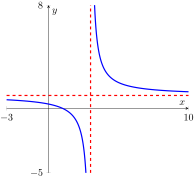

Example 146.
The graph of \(f(x) = \dfrac{x - 1}{x - 3}\) is shown below. Complete the statements.

As \(x \to \infty\text{,}\) \(f(x) \to\) _____
As \(x \to -\infty\text{,}\) \(f(x) \to\) _____
As \(x \to 3^+\text{,}\) \(f(x) \to\) _____
As \(x \to 3^-\text{,}\) \(f(x) \to\) _____
Solution.
-
As \(x \to \infty\text{,}\) \(f(x) \to 1\) (horizontal asymptote).
-
As \(x \to -\infty\text{,}\) \(f(x) \to 1\) (horizontal asymptote).
-
As \(x \to 3^+\text{,}\) \(f(x) \to \infty\) (vertical asymptote, right side).
-
As \(x \to 3^-\text{,}\) \(f(x) \to -\infty\) (vertical asymptote, left side).